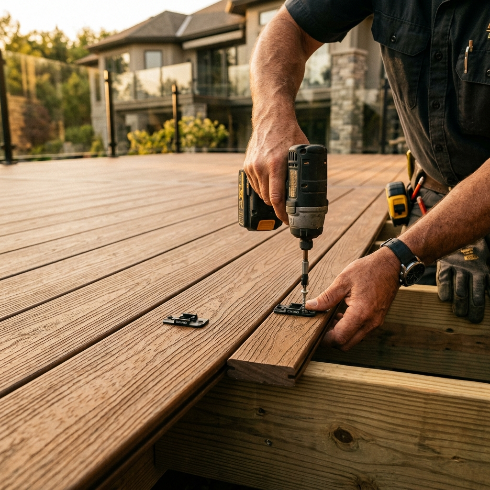
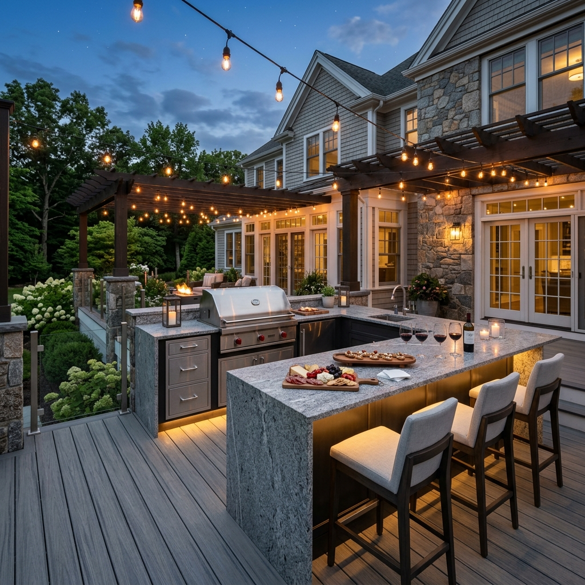
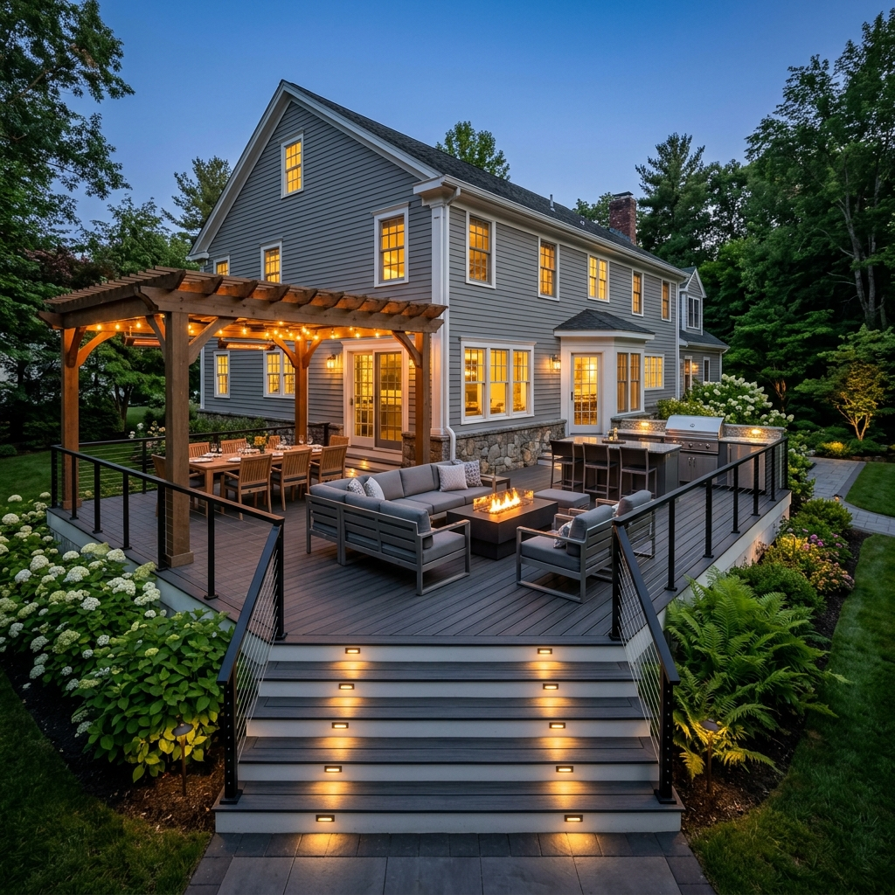
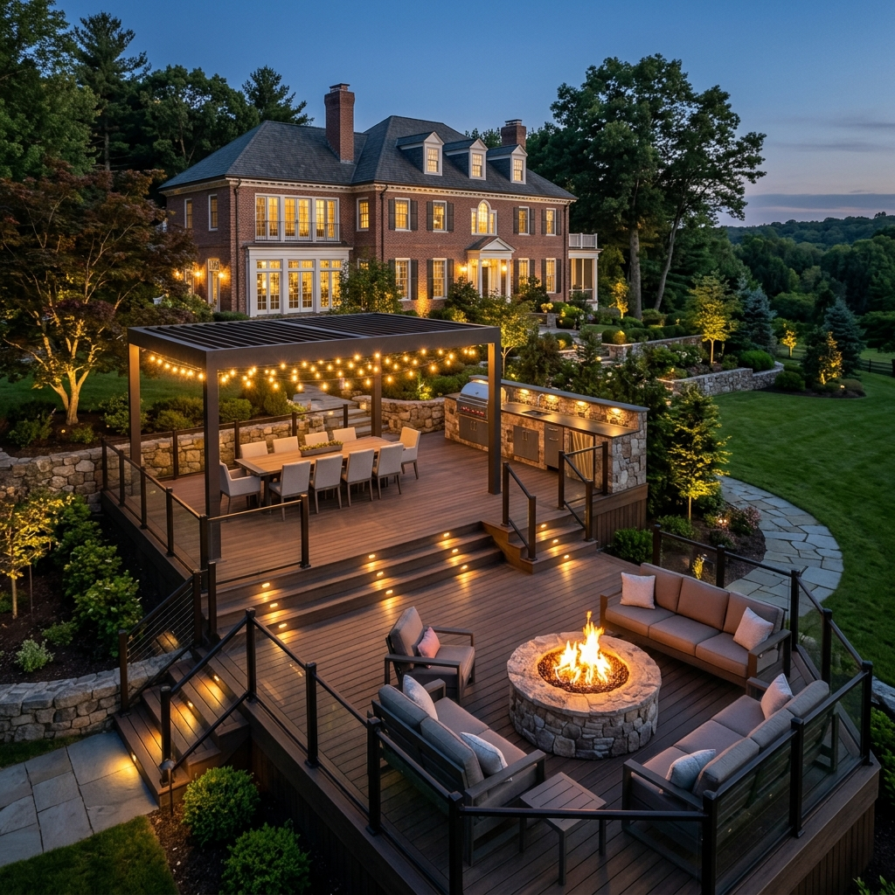

Culinary spaces crafted for hosting, gathering and enjoying restaurant-quality cooking at home.

ELEVATED ENTERTAINING
The Art of Outdoor Culinary Spaces
An outdoor kitchen is the ultimate luxury addition for homeowners who love to host. More than just a simple barbecue, our custom outdoor kitchens are fully integrated culinary environments, complete with professional-grade appliances, expansive stone counter prep areas, and seamless integration with your deck or patio.
We work with you to plan layout ergonomics (hot, dry, cold, and wet zones), custom stone masonry, and functional elements like under-counter refrigeration, wet bars, and task lighting to make cooking outdoors a pure pleasure.

DURABLE CRAFTSMANSHIP
Weather-Resistant Luxury Materials
Outdoor kitchens must withstand New England's freezing winters and hot summers. We select and build with heavy-duty, weather-tested materials that maintain their beauty and structural integrity year-round.
Premium Masonry: Hand-laid natural fieldstone, granite veneers, or modern concrete panels built over reinforced concrete bases.
Granite & Quartz Countertops: Thick, polished stone slabs sealed to resist grease, stains, and UV fading.
Marine-Grade Cabinetry: Weatherproof polymer or stainless steel cabinet boxes with soft-close doors to shield contents from rain and snow.
OUR PROJECTS
Featured Outdoor Kitchens
Explore a selection of custom outdoor cooking and dining spaces built for our clients in local Massachusetts towns.

Wellesley Outdoor Kitchen
Wellesley, MA

Chestnut Hill Dining Bar
Chestnut Hill, MA
Linear Grilling Station
Weston, MA
FAQ
Common Questions About Outdoor Kitchens
Yes. Depending on your kitchen configuration, we run low-voltage electrical lines for lighting and refrigerators, direct lines for natural gas or propane, and fresh water/drain plumbing lines for sinks. We handle the entire engineering, framing, and utility integration safely and to local codes.
Winterizing is simple but crucial to prevent freezing pipes. Before the first freeze, you should shut off the dedicated water supply valve inside your basement, drain the outdoor pipes and faucets, empty and unplug the refrigerator, and put a custom-fitted weather cover over the grill and island.
We work with and install leading premium outdoor appliance brands known for durability and performance, including Lynx, Wolf, Coyote, Fire Magic, and Sub-Zero. We help you select models that match your cooking style and spatial requirements.
Start Designing Your Outdoor Kitchen
Schedule a private on-site consultation to discuss your culinary space ideas.